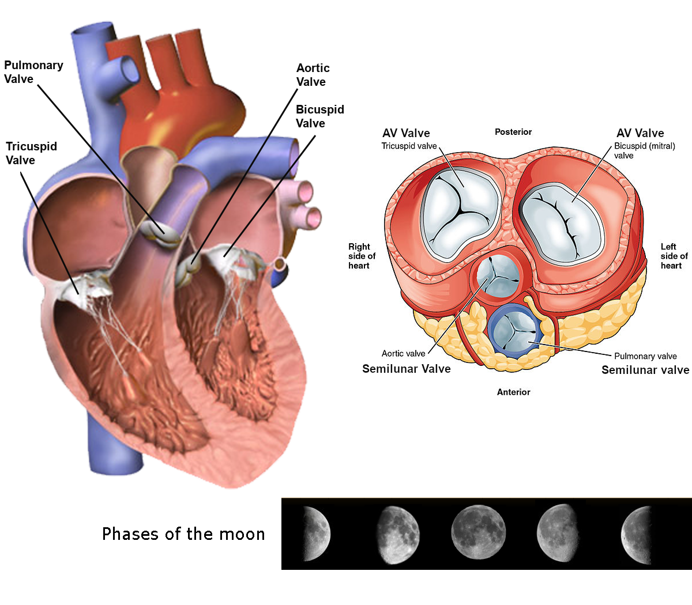
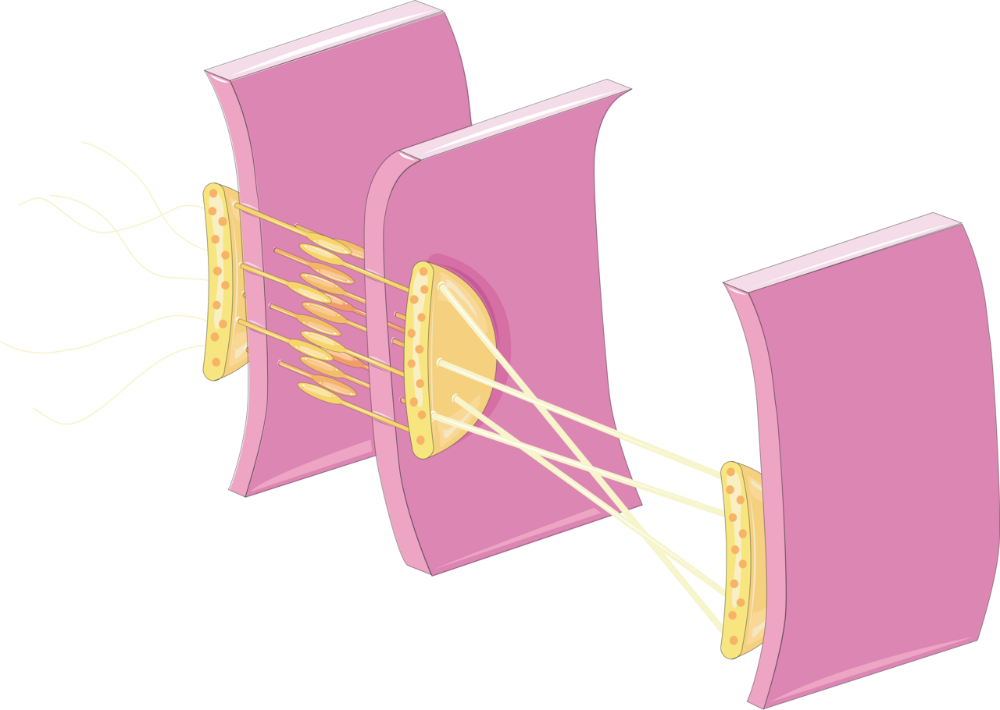
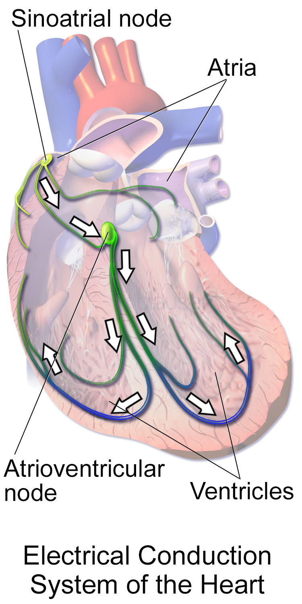
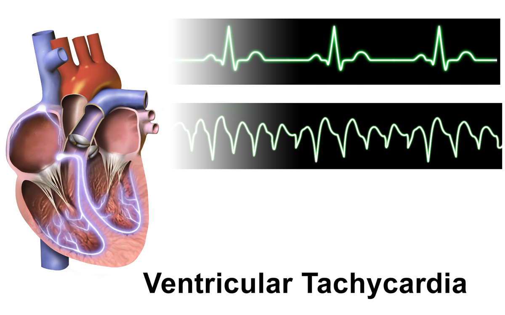
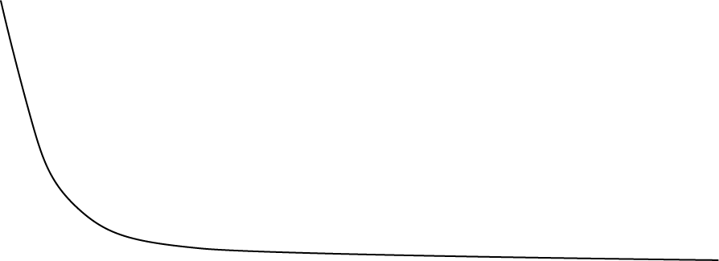

The Heart
The heart is not a mystery organ. It is a pair of pressure pumps set one after the other. The muscle that drives them builds its own rhythm. It also refuses to let its twitches blur together. In the last module you learned that flow follows Q = ΔP / R. Blood moves because a pressure difference pushes it against a resistance. This module is about where that pressure difference comes from. You will follow one beat all the way through. It starts with the pacemaker current that drifts a nodal cell to threshold. Then comes the calcium that links the electrical signal to contraction. Then come the pressure changes that snap valves open and shut. At the end, about 70 milliliters of blood leaves the left ventricle each cycle. Then you will see how the body adjusts that output beat by beat. Stretch does part of it, through the Frank–Starling mechanism. Nerve traffic does part of it. A baroreceptor loop does the rest. It guards mean arterial pressure the way a thermostat guards room temperature. Anatomy shows up here only where it explains behavior.
By the end of this module you can
- Say why both ventricles must pump the same average output. They do it against a fivefold difference in afterload. Use the Law of Laplace (T = P × r / 2h) to explain why the left ventricle needs a thicker wall.
- Name the five phases of the ventricular action potential. Say which ion current drives each one. State the absolute refractory period that results.
- Explain calcium-induced calcium release. Predict how a change in calcium inside the cell changes contractility.
- Explain automaticity using the funny current (If) and the T-type and L-type calcium currents. Rank the built-in rates of the SA node, the AV node, and the Purkinje fibers.
- Match each ECG mark to one electrical event. Those marks are the P wave, the QRS complex, the T wave, and the PR interval. State how long each interval normally lasts.
- Put the phases of the cardiac cycle in order. Name the valve events and heart sounds that start and end each phase. Read a pressure–volume loop.
- Work out stroke volume, ejection fraction, and cardiac output from EDV and ESV. Use normal adult values.
- Tell preload, afterload, and contractility apart. Predict what each one does to stroke volume.
- Draw the baroreceptor reflex. Name the regulated variable, the sensor, the integrator, the effectors, and the response. Say why it is negative feedback.
Section 1Two Pumps in Series: Where the Pressure Comes From

One circuit, one output: why the right and left hearts must match
The circulation is one closed loop. Two pumps sit inside it. Blood coming back from the body enters the right atrium. The right ventricle pumps it through the lungs. It returns to the left atrium. The left ventricle pumps it back out to the body. The loop is closed and the two pumps sit one after the other. So whatever the right ventricle pushes out each minute must pass through the left ventricle each minute. Both ventricles have the same average output. That is about 5 L/min at rest in a 70 kg adult. Small mismatches of a few milliliters happen all the time. A deep breath in loads the right heart a little more than the left. Those mismatches cannot last. A steady mismatch of even 1–2 mL per beat would flood one circuit within minutes. That is exactly what happens in heart failure. The failing side backs blood up behind it.
The two ventricles do not share the pressure they must build. The systemic circuit is a high-resistance bed. The left ventricle must push its inside pressure above aortic diastolic pressure before its outflow valve will open. That pressure is roughly 80 mmHg. During ejection it peaks near 120 mmHg. The pulmonary circuit is different. Its resistance is low and it stretches easily. The right ventricle only has to beat a pulmonary artery diastolic pressure of about 8–10 mmHg. It peaks near 25 mmHg. Pulmonary vascular resistance is roughly one-tenth of systemic vascular resistance. So the same flow needs about one-tenth of the driving pressure. That is Q = ΔP / R read backwards. Hold Q steady, lower R, and the ΔP you need falls by the same amount.
Learn the normal resting pressures as anchors. Almost every measurement in cardiology is a comparison against them. Right atrium: mean 0–5 mmHg. Right ventricle: 25/0–5 mmHg. Pulmonary artery: 25/10 mmHg, mean about 15 mmHg. Left atrium: mean 6–12 mmHg. Left ventricle: 120/0–10 mmHg. Aorta: 120/80 mmHg. Notice one thing. Diastolic pressure falls nearly to zero in both ventricles. A relaxed ventricle is a very floppy bag. That low pressure is what lets it fill from an atrium sitting barely 8 mmHg above it.
Valves are passive: pressure decides, not the heart
The four heart valves have no muscle and no nerve supply. Each one is a set of flaps. A valve opens when pressure upstream is higher than pressure downstream. It closes when the gradient reverses. Nothing inside a valve keeps time. The pressures on either side decide everything it does. Muscle contraction makes those pressures. So does the elastic snap-back of the great arteries. This is why you can work the cardiac cycle out from first principles. You do not have to memorize it as a list. Know the two pressures and you know the valve position.
The atrioventricular (AV) valves are the tricuspid on the right and the mitral on the left. They are large and floppy. Chordae tendineae hold them from turning inside out. Those cords anchor to papillary muscles. The papillary muscles contract along with the rest of the ventricle. They tighten the cords before pressure peaks. They do not pull the valve shut. They stop it from being blown backwards into the atrium. A cord can rupture, or a papillary muscle can infarct. Then the leaflet flops back and blood leaks into the atrium during systole. That wastes stroke volume. It also drops a sudden pressure load onto the pulmonary veins.
The semilunar valves are the pulmonic and the aortic. Each is three small cusps with no cords to support it. They close when arterial pressure rises above the falling ventricular pressure at the end of ejection. The aortic root recoils elastically. So closure is brisk. It makes a brief backward blip in pressure, the dicrotic notch. You can see it on any arterial pressure tracing. That same elastic recoil holds aortic pressure at 80 mmHg through diastole. Without it the pressure would collapse to zero. And that held pressure is what keeps the coronary arteries fed.
Wall thickness, wall stress and the Law of Laplace
The left ventricular free wall is 8–12 mm thick. The right ventricular wall is 3–5 mm. The reason is mechanical. The Law of Laplace covers a thick-walled sphere. It says wall stress T = P × r / (2h). P is the pressure inside the chamber. r is the chamber radius. h is the wall thickness. Wall stress is the load each single sarcomere has to carry. It is also the main thing that sets how much oxygen the heart muscle burns. The left ventricle must make 120 mmHg rather than 25 mmHg. To do that without a fivefold rise in stress on every fiber, it raises h. It also takes on a nearly round cross-section. A round shape keeps r as small as possible for a given volume. The right ventricle is a crescent wrapped around the left. That shape moves volume well at low pressure. It makes high pressure poorly.
Laplace also explains two spirals that matter at the bedside. The first is chronic pressure overload. Long-standing hypertension or aortic stenosis raises P. The ventricle adds sarcomeres side by side, so h rises. That is concentric hypertrophy. Wall stress goes back to normal. But the thick, stiff wall fills poorly, so diastolic pressures climb. The second is chronic volume overload, or the state after a large infarct. Here r rises. If h does not keep pace, wall stress rises. Oxygen demand rises with it. The stretched ventricle grows less and less efficient. This is why a dilated heart is at a mechanical disadvantage even when its muscle is intact. The geometry alone taxes it.
The same relationship makes sense of the fibrous skeleton. That is the ring of dense connective tissue around all four valve openings. It anchors the valves. It gives the heart muscle something to pull against. And it does one more job that matters in Section 3. It electrically insulates the atria from the ventricles. So the only conducting path between them is the AV node.
The two pumps sit one after the other, so their outputs must be equal. Every structural difference between the right and left heart comes from the pressure each must make. None of it comes from the volume each must move.
Section 2Cardiac Muscle: Coupling Excitation to Force

A functional syncytium wired by intercalated discs
A cardiac myocyte is a heart muscle cell. It is short, about 100 µm long and 20 µm wide. It branches. It usually has one nucleus. It is striped by the same actin and myosin setup you met in Module 5. The decisive difference from skeletal muscle sits at the ends of the cell. Neighboring myocytes join at intercalated discs. These discs carry two kinds of junction. Desmosomes and fascia adherens glue the cells together mechanically, so force passes end to end without tearing. Gap junctions are pores built from connexin proteins. They offer almost no resistance. They let ions, and so current, flow straight from one cytoplasm into the next.
The result is that heart muscle behaves as a functional syncytium. That means it acts like one big connected cell. An action potential started anywhere in the atria spreads to every atrial cell. One started anywhere in the ventricles spreads to every ventricular cell. The heart has no motor unit recruitment. You cannot contract half a ventricle. Every beat is an all-or-none event for the whole chamber. That is exactly what a pump needs. It is also exactly why the heart cannot grade its force the way a biceps does. Grading force in the heart has to happen inside each cell instead. How strongly each cell contracts is the subject of the rest of this section.
The non-conducting fibrous skeleton separates the atria from the ventricles. So they behave as two syncytia, not one. Atrial current cannot leak into the ventricles. It must pass through the AV node. That single electrical bottleneck is what makes ordered contraction possible. The atria squeeze first, then the ventricles. It also protects the ventricles when the atria fibrillate at 400–600 impulses per minute.
The ventricular action potential: five phases and one long plateau
A working ventricular myocyte rests at about −90 mV. That is close to the potassium equilibrium potential. Inward rectifier potassium channels (IK1) hold it there. Depolarizing current arrives through gap junctions and drives the membrane to about −70 mV. The action potential then runs through five phases.
Phase 0 is the upstroke. Voltage-gated fast sodium channels open. Sodium rushes in. The membrane shoots to about +20 mV in 1–2 ms. This is positive feedback that feeds itself. Depolarization opens sodium channels, and that causes more depolarization. It is one of the few genuine positive feedback loops in physiology. The body tolerates it because it shuts itself off within milliseconds, when those channels inactivate. Phase 1 is a brief notch. Sodium channels inactivate and a transient outward potassium current (Ito) flows. Phase 2 is the plateau. This is the feature that defines cardiac muscle. L-type calcium channels opened back in phase 0, but they are slow to get going. They carry a sustained inward calcium current. It almost exactly balances the outward potassium current. That holds the membrane near 0 mV for 150–250 ms. Phase 3 is repolarization. Calcium channels inactivate and delayed rectifier potassium currents (IKr, IKs) take over. Phase 4 is the stable resting potential. IK1, the sodium–potassium ATPase, and the sodium–calcium exchanger restore it and hold it there.
The whole thing lasts 200–300 ms. That is roughly a hundred times longer than a skeletal muscle action potential. It is about as long as the mechanical twitch it triggers. Some drugs and electrolyte problems block IKr. That stretches phase 3 and lengthens the QT interval on the ECG. A long QT invites a dangerous rhythm called torsades de pointes, a polymorphic ventricular tachycardia. Hypokalemia, a low blood potassium level, does the same thing. This is one of the most common reasons a medication is pulled from a formulary.
| Phase | Main current | Direction | What the membrane does | About how long |
|---|---|---|---|---|
| 0 Upstroke | Fast Na+ (INa) | Inward | −90 to +20 mV | 1–2 ms |
| 1 Notch | Transient outward K+ (Ito) | Outward | Small dip toward 0 mV | 5–10 ms |
| 2 Plateau | L-type Ca2+ vs delayed K+ | Balanced | Held near 0 mV | 150–250 ms |
| 3 Repolarization | IKr and IKs | Outward | Return to −90 mV | 50–100 ms |
| 4 Rest | IK1, Na+/K+ ATPase, NCX | Holds it steady | Steady −90 mV | Until the next beat |
Calcium-induced calcium release sets the strength of the beat
In the heart, excitation–contraction coupling works through a chemical link. Skeletal muscle uses a mechanical one. The action potential runs down the T-tubules. In cardiac muscle those tubes are wide and sit at the Z-line. L-type calcium channels sit in the T-tubule membrane. They are also called dihydropyridine receptors. They open and let a modest amount of outside calcium in. That is the trigger calcium. It binds ryanodine receptors (RyR2) on the nearby sarcoplasmic reticulum. Those receptors open and release a much larger calcium store into the cytosol. This amplifying step is calcium-induced calcium release.
Calcium in the cytosol rises from roughly 10−7 M at rest to about 10−5 M at peak. Calcium binds troponin C. Tropomyosin shifts. Cross-bridges cycle. The sarcomere shortens. Relaxing means clearing that calcium out. SERCA2a pumps about 70–80% of it back into the sarcoplasmic reticulum, and phospholamban regulates that pump. The sodium–calcium exchanger throws most of the rest out. It trades three sodium in for one calcium out. A small share leaves through a calcium ATPase in the plasma membrane.
Here is why this scheme matters. Cardiac force is graded by how much calcium reaches the myofilaments. The trigger calcium comes from outside the cell. So cardiac contraction depends completely on outside calcium and on working L-type channels. Skeletal muscle does not. This is why calcium channel blockers such as verapamil and diltiazem weaken contractility. It also explains digoxin. Digoxin blocks the sodium–potassium ATPase, so sodium inside the cell rises. That shrinks the gradient driving the sodium–calcium exchanger. Less calcium leaves the cell. More is stored in the SR. Each beat is stronger. Sympathetic stimulation reaches the same target from another angle. β1 receptors raise cyclic AMP. Protein kinase A then phosphorylates L-type channels, giving more trigger calcium. It also phosphorylates phospholamban, which speeds SERCA uptake. So the beat is stronger and relaxation is faster.
Refractoriness: the protection built into the plateau
Fast sodium channels stay inactivated from phase 0 through early phase 3. During that stretch no stimulus, however strong, can start another action potential. This absolute refractory period lasts about 200–250 ms. A relative refractory period of another 50 ms follows it. In that window a strong stimulus can produce a weak, slowly conducted response. The mechanical twitch lasts roughly 300 ms. The refractory period covers nearly all of it. So cardiac muscle cannot be excited again before it has relaxed. Summation and tetanus are therefore impossible.
That is not an inconvenience. It is the design requirement. A tetanized ventricle never fills. A heart that never fills produces no output. Ventricular fibrillation reaches that same dead end by a different route. It is not true tetanus. It is chaotic, unsynchronized activation. The mechanical result is identical. The ventricle quivers and ejects nothing. The long plateau is the built-in guarantee that contraction and relaxation take turns. It also sets the upper limit on heart rate. Above about 200 beats per minute diastole gets so short that filling, not contraction, limits output.
Cardiac force is graded by how much calcium reaches troponin. It is not graded by recruitment or by summation. Gap junctions make every beat all-or-none. And the 200–250 ms refractory period makes tetanus impossible.
Section 3Automaticity, Conduction and the ECG

Pacemaker cells drift to threshold on their own
Nodal cells have no stable resting potential. They repolarize to a maximum diastolic potential of about −60 mV. Then the membrane starts drifting straight back up. That drift is the pacemaker potential, also called phase 4 depolarization. Three currents drive it. First is the “funny” current If. Sodium carries most of it, through HCN channels. Oddly, those channels open when the cell is hyperpolarized. Second is the steady decay of the outward potassium current that caused repolarization. Third is T-type calcium channels opening late in the drift. The membrane reaches threshold at about −40 mV. L-type calcium channels then open and produce the upstroke.
Two things follow directly. Nodal upstrokes are carried by calcium, not sodium, so they are slow. They rise at about 1–10 V/s. A ventricular myocyte rises at 200–500 V/s. That is why nodal conduction velocity is low. The second point is about the slope of the drift. Pacemaking depends on it. Anything that steepens the slope speeds the heart. So does anything that raises the maximum diastolic potential or lowers the threshold. Sympathetic norepinephrine acts on β1 receptors and raises cyclic AMP. Cyclic AMP binds HCN channels directly and increases If. The slope steepens and the rate rises. That is positive chronotropy, a speeding of the rate. Vagal acetylcholine acts on M2 receptors. It opens potassium channels and reduces If and calcium current. The cell sits lower, the drift flattens, and the rate falls. That is negative chronotropy.
Several sites can pace. Their intrinsic rates form a hierarchy. The SA node runs at 90–100 per minute. The AV node runs at 40–60. The bundle of His and the Purkinje network run at 20–40. The fastest site captures the heart. It reaches threshold first and depolarizes everything else before the slower sites finish drifting. That is called overdrive suppression. So the SA node normally sets the rate. Look closely at the numbers. The intrinsic SA rate is 90–100. Yet a resting adult heart rate is 60–100, with an average near 70. The difference is continuous vagal tone. Block all autonomic input and the heart beats at about 100.
The conducting pathway and the deliberate AV delay
The SA node sits in the upper right atrium. Depolarization spreads from there cell to cell through atrial myocardium at roughly 1 m/s. It reaches all of both atria within about 90 ms. It converges on the AV node in the wall between the atria. That node is the only electrical connection through the fibrous skeleton. Conduction slows dramatically there, to about 0.05 m/s. Nodal cells have few gap junctions and slow calcium-dependent upstrokes. The AV nodal delay that results is roughly 100 ms. The delay is functional, not accidental. It gives the atria time to finish emptying before the ventricles contract. It also acts as a frequency filter, which protects the ventricles from very rapid atrial rates.
Beyond the node the signal enters the bundle of His. That divides into right and left bundle branches along the wall between the ventricles. The signal then spreads through the Purkinje fibers. These are wide cells packed with gap junctions. They conduct at 2–4 m/s. Total ventricular activation takes under 100 ms. The sequence matters. The septum depolarizes first, left to right. Then the apex. Then the free walls, from endocardium to epicardium and from apex to base. That apex-to-base sequence squeezes blood upward toward the outflow valves. Think of wringing a tube of toothpaste from the closed end.
Damage anywhere along the path produces a failure you can recognize. A block at the AV node lengthens the PR interval. That is first degree block. A worse block drops beats. That is second degree. Complete block leaves the ventricles beating on their own escape rhythm at 20–40 per minute. That is too slow to sustain output. Bundle branch block widens the QRS beyond 120 ms. One ventricle now has to be depolarized slowly through ordinary myocardium instead of quickly through Purkinje fibers.
| Structure | Conduction speed | Built-in rate (per min) | What it does |
|---|---|---|---|
| SA node | 0.05 m/s | 90–100 | Normal pacemaker. Sets the rate |
| Atrial myocardium | 1.0 m/s | — | Spreads depolarization to both atria |
| AV node | 0.05 m/s | 40–60 | Delay of about 100 ms. Filters out fast rates |
| Bundle of His / branches | 1–2 m/s | 20–40 | Carries the signal through the septum |
| Purkinje fibers | 2–4 m/s | 20–40 | Fast, almost all-at-once ventricular activation |
| Ventricular myocardium | 0.3–1 m/s | — | Spreads from the inner wall to the outer wall |
Reading the electrical story: the surface ECG
An electrocardiogram records voltage picked up by electrodes on the skin. That voltage is the sum of the electrical waves sweeping through the myocardium as it depolarizes and repolarizes. It is a record of electrical events only. The P wave is atrial depolarization. It lasts under 120 ms and stands less than 2.5 mm tall. The QRS complex is ventricular depolarization, normally under 120 ms. It is tall because ventricular mass is large. The T wave is ventricular repolarization. It points up in most leads. Repolarization runs from epicardium to endocardium, the opposite direction from depolarization. The two sign reversals cancel, so the wave stays upright.
The intervals carry the timing information. The PR interval runs from the start of P to the start of QRS. It is 120–200 ms. AV nodal delay makes up most of it. The QT interval spans depolarization plus repolarization. It changes with rate. Corrected for rate, it is normally under about 440 ms. The flat ST segment lines up with the plateau. During it the whole ventricle is depolarized, so no voltage difference exists across the heart. That is why a raised or lowered ST segment is a warning. It means one region sits at a different membrane potential than its neighbors. That is the electrical signature of ischemia or infarction.
Atrial repolarization has no visible wave. Its voltage is low. It also happens during the QRS, which buries it. Now look at the timing at a normal rate of 75 beats per minute. One complete cardiac cycle takes 0.8 s. The electrical events run from the start of P to the end of T. That is a PR interval of about 0.16 s plus a QT interval of about 0.38 s. Together they occupy roughly 0.55 s. The rest is electrical silence in late diastole.
Automaticity comes from the funny current and the calcium currents that drift nodal cells up to threshold. The fastest site wins. The ECG is a timing record of that electrical wave. It never records the contraction the wave triggers.
Section 4The Cardiac Cycle: Pressures, Volumes and Sounds

One cycle in 0.8 seconds
At 75 beats per minute each cycle lasts 0.8 s. Systole takes about 0.3 s and diastole about 0.5 s. Follow the left ventricle through the phases. Remember that every valve event is simply a pressure crossing.
Ventricular filling begins when left ventricular pressure falls below left atrial pressure. The mitral valve then opens. Filling is rapid at first, because the ventricle is recoiling and actively sucking. It then slows through a quiet stretch called diastasis. Roughly 70–80% of filling is passive. Atrial systole follows the P wave. It adds the final 20–30%. That last push is the “atrial kick”. It brings end-diastolic volume (EDV) to about 120–130 mL. At rest you can do without the kick. That is why many people tolerate atrial fibrillation. At high heart rates diastole is short. Losing the kick can then cost 20% of stroke volume.
Isovolumetric contraction begins at the QRS. Ventricular pressure rises above atrial pressure, so the mitral valve shuts. That makes the first heart sound. Pressure has not yet exceeded aortic pressure, so the aortic valve is still closed. All four valves are shut and the volume cannot change. The ventricle simply builds pressure. It goes from about 10 to 80 mmHg in roughly 50 ms. Ejection starts the moment ventricular pressure exceeds aortic pressure and the aortic valve opens. Pressure peaks near 120 mmHg. About 70 mL leaves the ventricle. Isovolumetric relaxation follows aortic valve closure, which makes the second heart sound. All valves are shut again. Pressure plummets from about 80 mmHg to under 10 mmHg with no change in volume. Then the mitral valve reopens and the cycle repeats. End-systolic volume (ESV) is about 50–60 mL.
Everything else follows from those two volumes. Stroke volume SV = EDV − ESV = 120 − 50 = 70 mL. Ejection fraction EF = SV / EDV = 70 / 120 ≈ 0.58, or 58%. That sits comfortably inside the normal range of 55–70%. Cardiac output CO = HR × SV = 75 × 70 mL = 5250 mL/min, which is about 5 L/min. Indexed to body surface area, cardiac index is normally 2.5–4.0 L/min/m2.
Heart sounds mark valve closure, not valve slamming
The first heart sound, S1 (“lub”), lines up with mitral and tricuspid closure at the start of systole. It is longer and lower pitched. The second, S2 (“dub”), lines up with aortic and pulmonic closure at the end of systole. It is shorter and higher pitched. The gap from S1 to S2 is systole. The gap from S2 to the next S1 is diastole. That is why diastole is easy to pick out by ear. It is the longer pause.
The sound is not the leaflets clapping together. It is the whole system vibrating: blood, valve, chamber, and vessel. The vibration happens as flow is braked suddenly. This point matters because it explains murmurs. Any turbulence makes an audible vibration. Blood forced through a narrowed opening does it. So does blood leaking backwards through a valve that does not seal. So a systolic murmur points to one of two problems. Either a valve that should be closed is leaking, as in mitral regurgitation. Or a valve that should be open is narrowed, as in aortic stenosis. The timing tells you which.
S2 normally splits when you breathe in. Breathing in lowers intrathoracic pressure. More blood returns to the right heart. Right ventricular ejection takes longer, so pulmonic closure is delayed. At the same time blood pools in the expanded pulmonary vessels. That slightly reduces filling on the left. Physiological splitting is something you can hear. It proves the two ventricles are loaded separately, even though their average outputs are identical. S3 is a low-pitched sound in early diastole. It reflects rapid filling into a dilated ventricle. S4 comes just before S1. It reflects atrial contraction against a stiff ventricle.
The pressure–volume loop
Put left ventricular pressure on the vertical axis. Put volume on the horizontal axis. One cardiac cycle then traces a counter-clockwise loop with four sides. The bottom edge, moving right, is filling. The right vertical edge is isovolumetric contraction. The top edge, moving left, is ejection. The left vertical edge is isovolumetric relaxation. The width of the loop is stroke volume. The area inside it is stroke work, the external work the ventricle performs each beat.
The loop is the fastest way to see how preload, afterload, and contractility differ. Raise preload with more venous return. The right-hand corner moves outward. The loop widens, stroke volume rises, and ESV barely changes. Raise afterload with a higher aortic pressure. The top of the loop lifts and the aortic valve closes earlier. ESV rises and stroke volume falls for that beat. Raise contractility and the end-systolic pressure–volume relationship gets steeper. The ventricle empties to a smaller ESV. Stroke volume rises with no change in filling. Three different interventions give three visually distinct changes. That is why the loop is worth learning as a picture rather than as a paragraph.
The coronary circulation is perfused in diastole
The heart consumes about 8–10 mL of oxygen per 100 g of tissue per minute. It extracts 70–80% of the oxygen delivered to it, even at rest. Coronary sinus blood is only about 30% saturated. That is the lowest venous saturation in the body. Because extraction is already near maximal, the heart cannot meet higher demand by extracting more. It must increase flow instead. Resting coronary flow is roughly 250 mL/min, about 5% of cardiac output. With exercise it can rise four- to fivefold. Local adenosine and nitric oxide do most of that work.
The timing constraint is the twist. During systole the contracting myocardium compresses the vessels running through it. Left coronary flow nearly stops. The subendocardium, the inner layer of the wall, is squeezed hardest. So the left ventricle is perfused mainly during diastole. The driving pressure is aortic diastolic pressure, about 80 mmHg, minus left ventricular diastolic pressure. Two consequences follow straight from that. Tachycardia shortens diastole disproportionately. So it cuts coronary perfusion time exactly when demand is highest. That is the mechanism behind demand ischemia. Second, anything that raises left ventricular diastolic pressure narrows the gradient. So does anything that lowers aortic diastolic pressure. That is why hypotension is so dangerous in a patient with coronary disease.
Every valve event in the cycle is a pressure crossing. The two isovolumetric phases exist because pressure must change before any valve can open. And stroke volume is simply a difference. It is the volume at the start of ejection minus the volume left at the end.
Section 5Cardiac Output and the Loops That Control It

Cardiac output has exactly two terms
CO = HR × SV. Every influence on cardiac output, whether from the body or from a drug, must act through one of those two terms. That makes this the most useful equation in the module. At rest, 75 beats per minute × 70 mL gives about 5 L/min. In a trained athlete at maximal exercise, 190 × 160 mL gives more than 30 L/min. That is a sixfold increase. It comes from roughly a 2.5-fold rise in rate and a 2.3-fold rise in stroke volume.
You can measure cardiac output with the Fick principle. It is just conservation of mass applied to oxygen: CO = VO2 / (CaO2 − CvO2). Say a resting adult consumes 250 mL O2 per minute. Arterial blood carries 200 mL O2 per liter. Mixed venous blood carries 150 mL per liter. Then CO = 250 / 50 = 5 L/min. Notice what this tells you clinically. A widened arteriovenous oxygen difference means tissues are extracting more, because flow is inadequate. A low cardiac output state announces itself in the venous saturation.
Autonomic tone on the SA node controls heart rate almost entirely, as Section 3 described. Stroke volume has three independent determinants. They are preload, afterload, and contractility. Everything else in this section is about those three.
Preload and the Frank–Starling relationship
Preload is how far the ventricular myocardium is stretched at the end of diastole. In practice it is end-diastolic volume. Venous return sets it. Several things drive venous return. Blood volume and venous tone are two of them. The skeletal muscle pump and the respiratory pump are two more. The last is the time available for filling. The Frank–Starling law says something simple. Within physiological limits, the greater the end-diastolic stretch, the greater the force of the next contraction. So the greater the stroke volume too.
The molecular basis has two parts. Stretch improves the overlap between thick and thin filaments. It moves sarcomeres toward the optimal length of about 2.2 µm. The second part matters more. Stretch increases the calcium sensitivity of troponin C. At the same cytosolic calcium concentration, a stretched sarcomere generates more force. Cardiac muscle normally works on the ascending limb of its length–tension curve. So more filling reliably means more force. Skeletal muscle is different. It sits near its optimum and can be overstretched onto a descending limb.
The functional payoff is automatic matching. Say venous return to the right ventricle rises during inspiration. The right ventricle stretches and ejects more. That extra volume reaches the left atrium a few beats later. It stretches the left ventricle, and the left ventricle ejects more. No nerve, no hormone, and no signal from the brain is required. This intrinsic mechanism keeps the two pumps balanced beat to beat. It is also why a transplanted, denervated heart still increases its output during exercise.
Afterload and contractility
Afterload is the load the ventricle must overcome in order to eject. It is essentially the wall stress present during ejection. At the bedside it is approximated by systolic arterial pressure. Systemic vascular resistance is a closer approximation. Raising afterload means the ventricle spends longer in isovolumetric contraction. The aortic valve opens later. The ventricle ejects against greater opposition. It finishes with a larger end-systolic volume. Stroke volume falls for that beat. A healthy ventricle compensates within a beat or two. The retained volume increases the next beat’s preload, and Frank–Starling restores output. A failing ventricle cannot do that. This is why afterload reduction with vasodilators is such an effective heart failure therapy.
Contractility, also called inotropy, is the intrinsic vigor of contraction at any given preload and afterload. It is not stroke volume. It is the position of the curve that generates stroke volume. Positive inotropes act by raising the calcium available to troponin. Sympathetic stimulation and circulating epinephrine do it through β1 receptors and cyclic AMP. Digoxin does it through sodium–calcium exchange. Calcium salts do it directly. Negative inotropes lower that calcium. They include acetylcholine, which acts weakly and mostly on the atria. They also include β-blockers and calcium channel blockers. So do acidosis, hypoxia, and hyperkalemia. Hyperkalemia is a high blood potassium level. Sympathetic stimulation phosphorylates phospholamban as well as the L-type channel. So it speeds relaxation too. That is a necessary trick. A heart beating at 180 per minute has almost no diastole to spare.
The three determinants can be separated experimentally. They never occur alone in a living person. Take exercise. It raises heart rate, through sympathetic drive plus vagal withdrawal. It raises preload, through the muscle pump and venoconstriction. It raises contractility, through β1 stimulation. And it lowers afterload in the working muscle beds, through local metabolic vasodilation. All four changes push in the same direction. That is how output can rise sixfold.
The baroreceptor reflex: negative feedback defending arterial pressure
The regulated variable is mean arterial pressure, normally 70–100 mmHg. You can estimate it as MAP = diastolic + one third of pulse pressure. You can also get it from MAP = CO × SVR. The sensors are baroreceptors. They are stretch-sensitive nerve endings in the carotid sinus and the aortic arch. The carotid sinus reports through the glossopharyngeal nerve, CN IX. The aortic arch reports through the vagus, CN X. They fire at a rate proportional to arterial wall stretch. The integrator is the cardiovascular center in the medulla oblongata. The effectors are the SA node and AV node, the ventricular myocardium, and vascular smooth muscle. Sympathetic and parasympathetic fibers reach them.
Trace a fall in pressure. Standing up quickly does it. That move pools 500–800 mL of blood in the legs. Arterial stretch falls. Baroreceptor firing falls. The medulla reads that reduced traffic as low pressure. It withdraws vagal tone and increases sympathetic outflow. Heart rate rises. Contractility rises. Veins constrict, which raises preload. Arterioles constrict, which raises systemic vascular resistance. MAP = CO × SVR, and CO = HR × SV. So every one of those responses pushes MAP back up. The response opposes the disturbance. That is the definition of negative feedback. The whole loop operates within one or two heartbeats. Sometimes it is sluggish, as in autonomic neuropathy or after prolonged bed rest. Then the person becomes light-headed on standing. That is orthostatic hypotension.
The reflex runs in both directions. A rise in pressure stretches the baroreceptors more. They fire faster. The medulla increases vagal output and withdraws sympathetic tone. Heart rate, contractility, and vascular tone all fall. This is why carotid sinus massage can slow a supraventricular tachycardia. It is also why a tight collar can make a susceptible person faint. Longer-term pressure control is handled hormonally. Renin–angiotensin–aldosterone handles part of it. So does antidiuretic hormone. So does atrial natriuretic peptide, released by stretched atria to promote sodium and water loss. But the baroreceptor reflex is the fast loop. Baroreceptors reset within a day or two. That is precisely why they cannot correct chronic hypertension.
Cardiac output is heart rate times stroke volume. Stroke volume is set by preload, afterload, and contractility. The baroreceptor reflex is the fast negative feedback loop. It works all four of those to hold mean arterial pressure steady.
The module in one breath
The heart is two pumps set one after the other. Both eject the same 5 L/min. The left one generates roughly five times the pressure. Q = ΔP / R explains that difference on its own. A thicker wall pays for it structurally, following T = P × r / 2h. The muscle is a syncytium coupled by gap junctions, so every beat is all-or-none. Force is graded by calcium instead, delivered through calcium-induced calcium release. A 200–250 ms refractory period built into the plateau prevents tetanus. Rhythm arises from nodal cells that drift to threshold on the funny current. The fastest site captures the heart. That is the SA node at 90–100 per minute, restrained to about 70 by vagal tone. A deliberate 100 ms AV delay lets the atria empty before the ventricles contract. The ECG times all of this and nothing mechanical. Each 0.8 s cycle is a chain of pressure crossings that open and close passive valves. Volume moves from 120 mL down to 50 mL, so 70 mL is ejected. Output is then defended four ways. Preload defends it through Frank–Starling. Afterload and contractility do their part. And the baroreceptor reflex, a negative feedback loop in the medulla, holds mean arterial pressure near 90 mmHg.
Words worth knowing
| Term | What it means |
|---|---|
| Afterload | The load the ventricle must overcome in order to eject. Estimate it from systolic arterial pressure or from systemic vascular resistance. Raising it raises end-systolic volume. |
| Automaticity | The ability of nodal and Purkinje cells to depolarize to threshold on their own, with no outside stimulus. |
| AV nodal delay | The roughly 100 ms slowing of conduction through the atrioventricular node. It lets the atria empty before the ventricles contract. It produces the PR interval. |
| Calcium-induced calcium release | Trigger calcium enters through L-type channels and opens ryanodine receptors on the sarcoplasmic reticulum. That amplifies the calcium signal in the cytosol about tenfold. |
| Cardiac output (CO) | The volume one ventricle ejects per minute. CO = HR × SV, about 5 L/min at rest. |
| Contractility (inotropy) | The intrinsic force of contraction at a fixed preload and afterload. The calcium available to troponin C sets it. |
| Ejection fraction (EF) | SV divided by EDV, normally 55–70%. It is a percentage, not a volume. |
| End-diastolic volume (EDV) | The volume in the ventricle just before it contracts, about 120–130 mL. It is the practical measure of preload. |
| Frank–Starling law | More stretch at the end of diastole gives more contractile force. It works largely by making troponin C more sensitive to calcium. |
| Funny current (If) | A sodium-carried current through HCN channels. It turns on when the cell is hyperpolarized, and it drives the pacemaker potential. |
| Gap junction | A connexin pore in the intercalated disc. It lets current pass straight between myocytes, so the myocardium acts as one connected sheet. |
| Isovolumetric contraction | The phase after the mitral valve shuts and before the aortic valve opens. All valves are shut, pressure rises steeply, and volume does not change. |
| Law of Laplace | Wall stress T = P × r / 2h. It explains why high-pressure or dilated chambers need thicker walls. |
| Mean arterial pressure (MAP) | The average pressure driving blood through the body, about 70–100 mmHg. MAP = CO × SVR, or diastolic plus one third of pulse pressure. |
| Plateau (phase 2) | The 150–250 ms part of the ventricular action potential where inward calcium balances outward potassium. It creates the long refractory period. |
| Preload | The stretch on the heart muscle at the end of diastole. Venous return and filling time set it. |
| Refractory period | The time during which a myocyte cannot be excited again, about 200–250 ms for the absolute period. It prevents summation and tetanus. |
| Stroke volume (SV) | EDV minus ESV, about 70 mL per beat at rest. |
| Baroreceptor reflex | The fast negative feedback loop in the medulla. It uses stretch receptors in the carotid sinus and aortic arch to adjust rate, contractility, and vascular tone, so MAP stays steady. |
| Dicrotic notch | A brief blip on the aortic pressure tracing. Elastic recoil at aortic valve closure produces it. It marks the end of ejection. |